Uncharted es una saga de videojuegos de acción y aventura protagonizada por Nathan Drake, un cazatesoros que viaja por diferentes partes del mundo en busca de tesoros perdidos.
Durante sus aventuras deberá resolver misterios, explorar ruinas antiguas y enfrentarse a numerosos peligros.
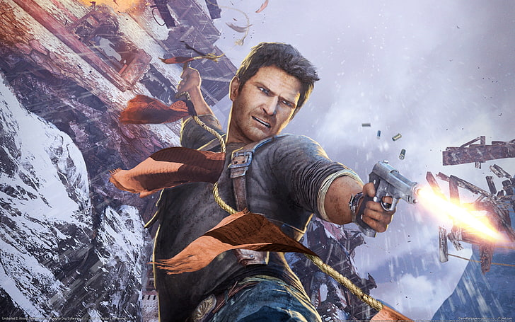
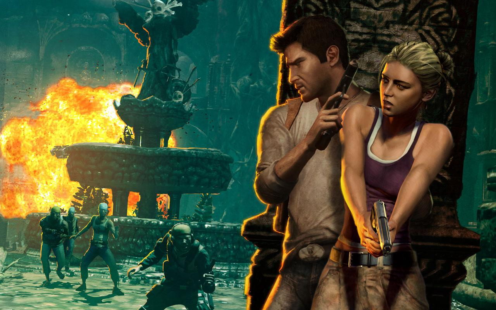
La primera entrega de la franquicia y el comienzo de las aventuras de Nathan Drake.
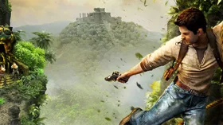
Una búsqueda peligrosa detrás de un antiguo secreto. Nathan se embarca en la busqueda de la mitica ciudad de Shambhala
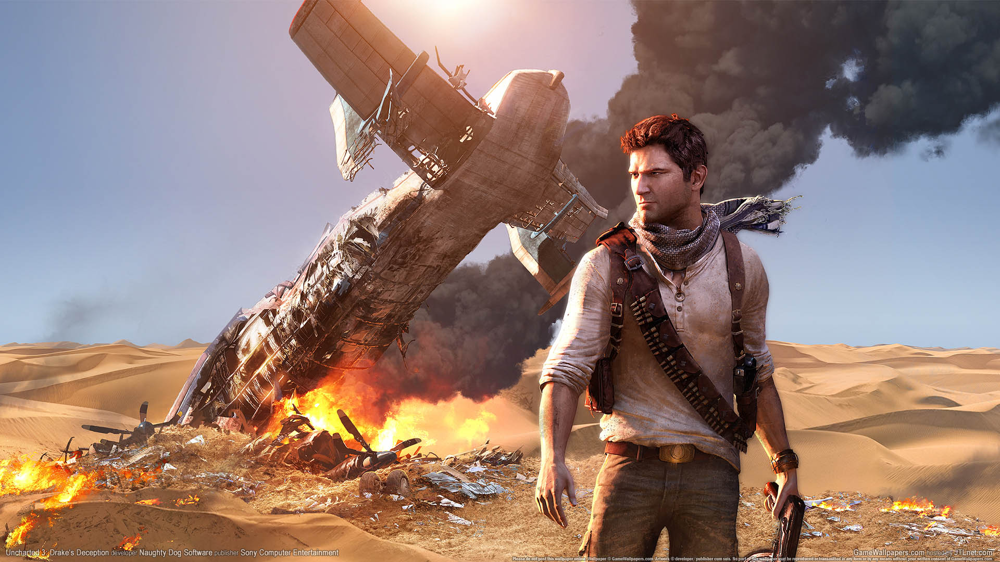
Una aventura que lleva a Nathan hasta el desierto.
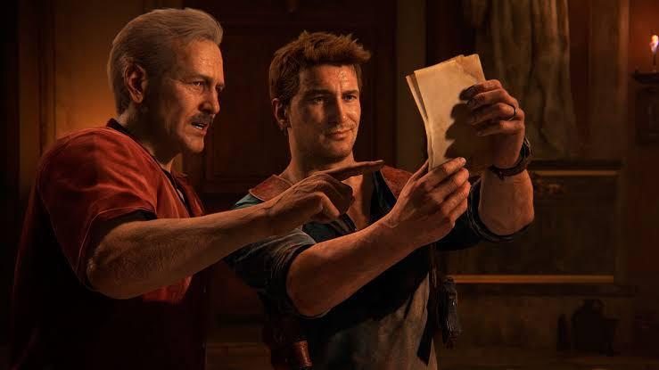
Nathan regresa a la aventura por un último tesoro.
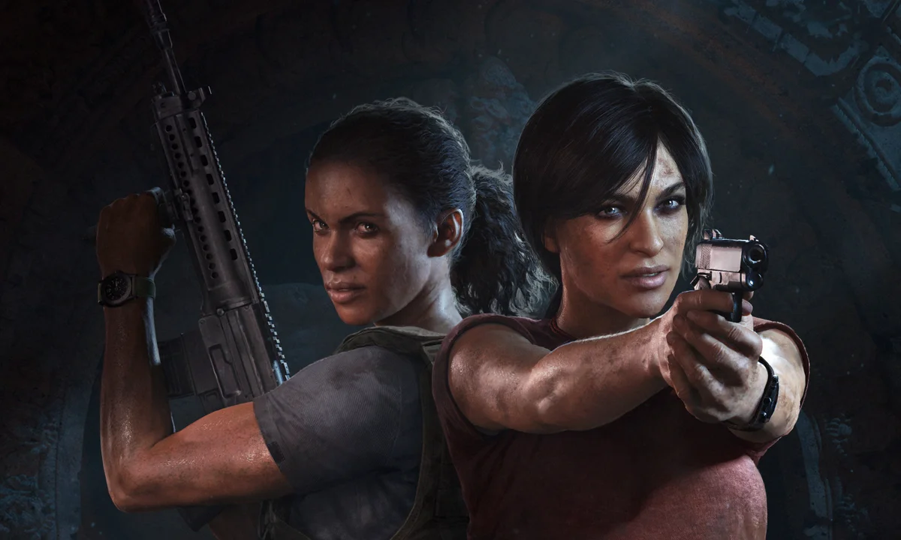
Chloe Frazer protagoniza una nueva búsqueda.
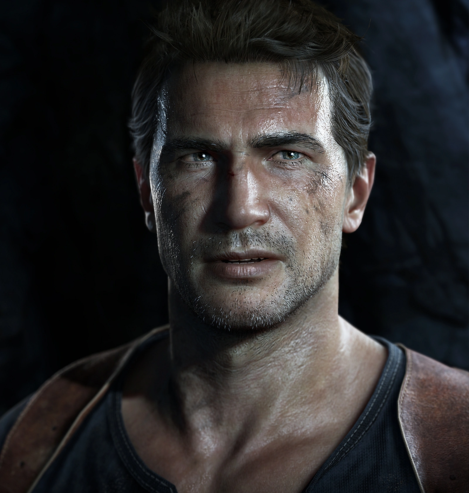
Cazatesoros y protagonista principal de la saga.
Periodista y compañera de Nathan.
Mentor y mejor amigo de Nathan.
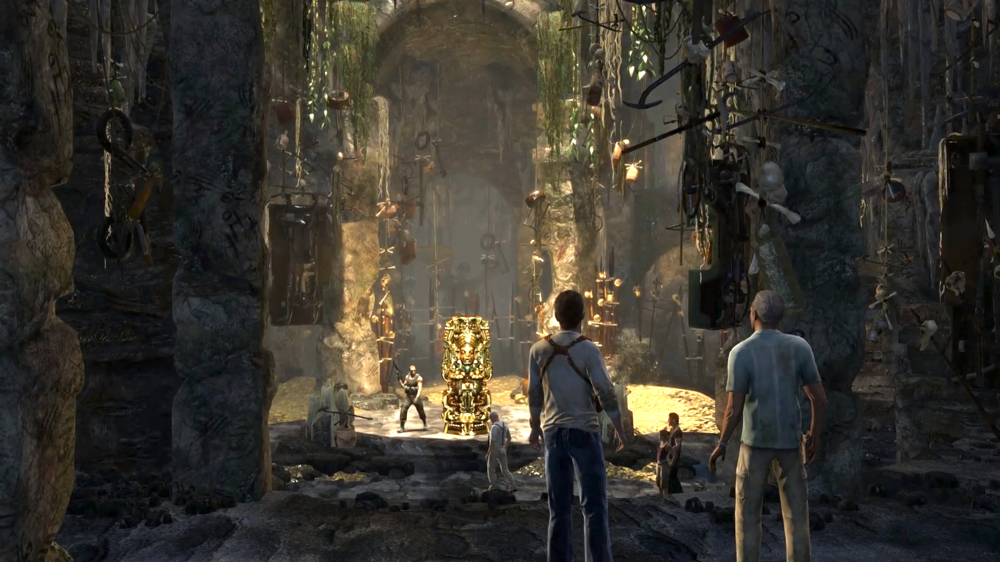
Una antigua ciudad perdida que Nathan Drake busca en su primera aventura. Su misterio esconde peligros inesperados.
Uncharted 1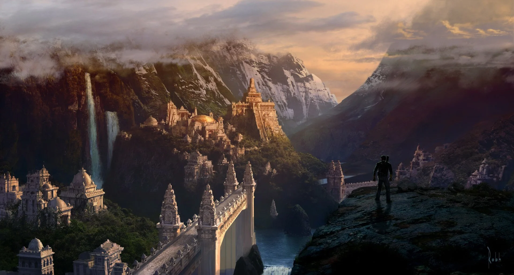
Una ciudad legendaria escondida entre las montañas del Himalaya, relacionada con un antiguo y misterioso secreto.
Uncharted 2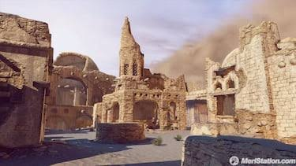
Una ciudad perdida en medio del desierto, conocida como la Atlántida de las Arenas. Nathan deberá descubrir su ubicación.
Uncharted 3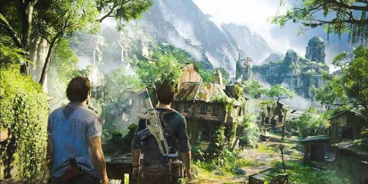
Una colonia pirata legendaria que Nathan y Sam intentan encontrar siguiendo las pistas de un antiguo tesoro.
Uncharted 4Uncharted es mucho más que una búsqueda de tesoros. Es una saga que combina aventura, exploración, acción y personajes inolvidables que dejaron su marca en los videojuegos.